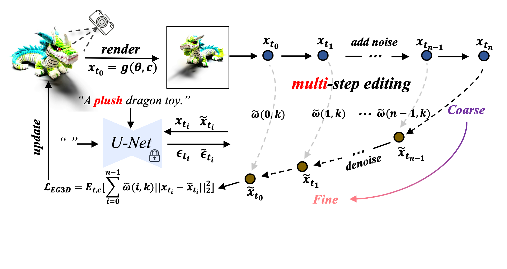

Text-to-3D Generation by 2D Editing
Haoran Li1, Yuli Tian1, Yonghui Wang1, Yong Liao1*, Lin Wang2, Yuyang Wang3, Peng Yuan Zhou4
1 University of Science and Technology of China
2 Nanyang Technological University
3 The Hong Kong University of Science and Technology (Guangzhou)
4 Aarhus University
Abstract
Distilling 3D representations from pretrained 2D diffusion models is essential for 3D creative applications across gaming, film, and interior design. Current SDS-based methods are hindered by inefficient information distillation from diffusion models, which prevents the creation of photorealistic 3D contents. Our research reevaluates the SDS approach by analyzing its fundamental nature as a basic image editing process that commonly results in over-saturation, over-smoothing and lack of rich content due to the poor-quality single-step denoising. To address these limitations, we propose GE3D (3D Generation by Editing). Each iteration of GE3D utilizes a 2D editing framework that combines a noising trajectory to preserve the information of the input image, alongside a text-guided denoising trajectory. We optimize the process by aligning the latents across both trajectories. This approach fully exploits pretrained diffusion models to distill multi-granularity information through multiple denoising steps, resulting in photorealistic 3D outputs. Both theoretical and experimental results confirm the effectiveness of our approach, which not only advances 3D generation technology but also establishes a novel connection between 3D generation and 2D editing. This could potentially inspire further research in the field.
Photorealistic Quality in Text-to-3D
GE3D resolves the issues of over-saturation and over-smoothing typically found in SDS-based generation methods, achieving photorealistic quality in 3D content generation.
| Swarovski crystal earrings, photorealistic, 8K, HDR. | Bulgari bracelet, photorealistic, 8K, HDR. | Rolex watch with gold and diamonds, 8K, HDR. | A leather wallet, minimalist design, brown color, 8K, HDR. |
| A wooden rocking chair, natural style, comfortable, 8K. | A vintage writing desk, wooden, detailed carvings, 8K, HDR. | A vintage radio, wooden case, retro design, 8K, HDR. | A decorative lantern, warm lighting, 8K, HDR. |
| A giraffe with a scarf, cozy, realistic, 8K, HDR. | A ceramic snail, its shell painted in bright, swirling colors. | A fluffy squirrel wearing a tiny wizard hat. | A western dragon with fire, covered in scales, 8K. |
| A soft plush bunny gift with long ears. | A wooden elephant, carved from a single block of mahogany with a glossy finish. | A DSLR of photo of a robot dinosaur. | A classic wooden toy train set with brightly colored carriages and tracks. |
| Black Widow in Marvel, head, photorealistic, 8K, HDR. | Captain America, head, photorealistic, 8K, HDR. | A portrait of IRONMAN with white hair, head, photorealistic, 8K, HDR. | Zombie JOKER, head, photorealistic, 8K, HDR. |
| Medieval knight in full armor, photorealistic, 8K, HDR. | Ninja in black outfit, photorealistic, 8K, HDR. | Woody in Disney, photorealistic, 8K, HDR. | Harry Potter with a wand, photorealistic, 8K, HDR. |
Approach
The overview of GE3D. We integrated the 2D editing process into 3D generation. Unlike the single-step editing in SDS in DreamFusion and ISM in LucidDreamer, we used multi-step editing with latents alignment to combine different granularities of information from the pre-trained 2D diffusion model into the 3D representation, achieving high-quality generation.
Citation
@article{li2024text2d3d,
title={Text-to-3D Generation by 2D Editing},
author={Li, Haoran and Tian, Yuli and Wang, Yonghui and Liao, Yong and Wang, Lin and Wang, Yuyang and Zhou, Peng Yuan},
journal={arXiv preprint arXiv:2412.05929},
year={2024}
}